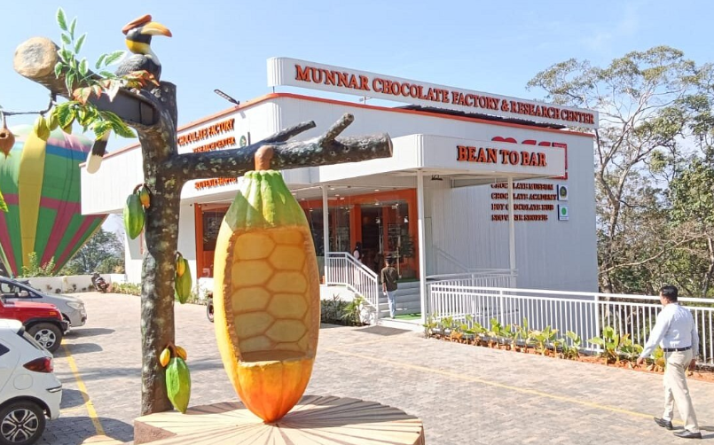
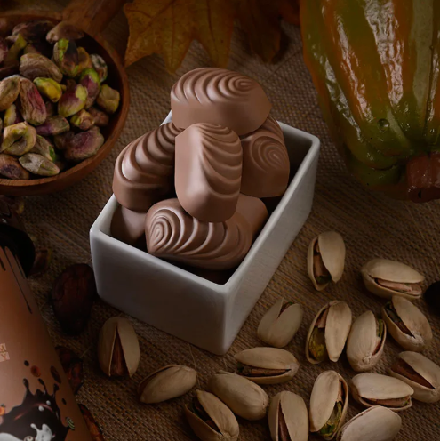
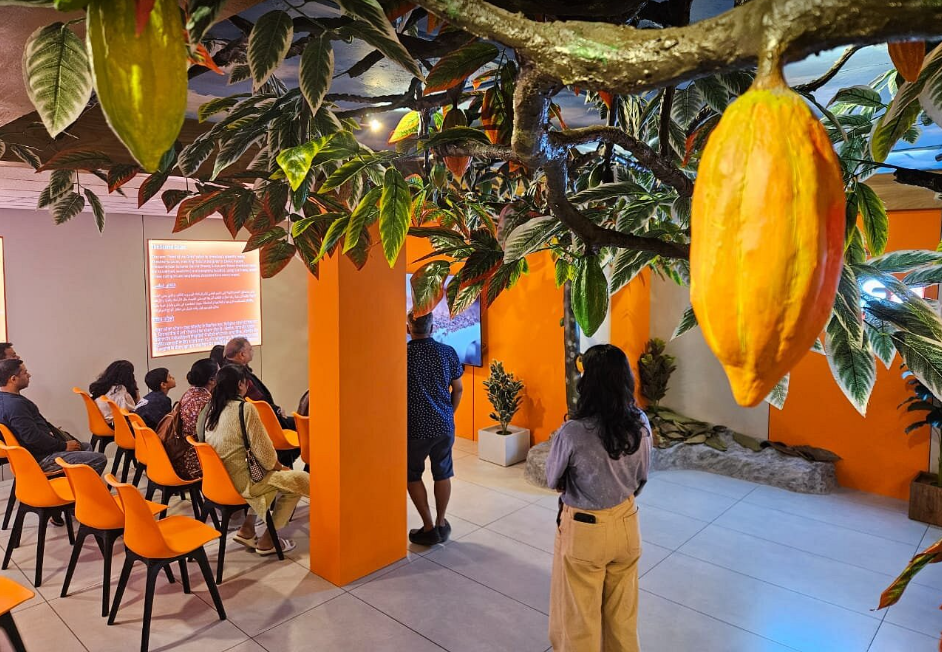

Macofa Chocolate Factory is a popular tourist attraction located near Munnar in Idukki district, Kerala. The factory is well known for producing premium chocolates made from high-quality cocoa beans sourced from Kerala. Visitors can watch the chocolate-making process, learn how cocoa is transformed into delicious chocolates, and taste a variety of fresh chocolate products. 0
The factory also has a spacious showroom where visitors can buy dark, milk, fruit, nut, and sugar-free chocolates, along with cocoa products and gift packs. Surrounded by the beautiful hills of Munnar, Macofa Chocolate Factory is a favourite destination for families, students, and chocolate lovers who want to enjoy a unique and memorable experience. 1



Macofa Chocolate Factory is one of the most popular chocolate factories in Munnar, located at Anachal in Idukki District, Kerala. It is famous for producing premium handmade chocolates using high-quality cocoa beans. Visitors can watch the chocolate-making process, taste fresh chocolates and purchase a wide variety of chocolate products.
Macofa Chocolate Factory is a venture of Manna Sweets. It was established to promote premium chocolate manufacturing in Kerala using locally sourced cocoa beans. Today, it is one of South India's leading chocolate tourism destinations. 1
The factory produces dark chocolate, milk chocolate, white chocolate, fruit chocolates, nut chocolates, sugar-free chocolates, cocoa powder and hot chocolate. Visitors can observe various stages of chocolate production from cocoa beans to finished products. 2
Today, Macofa Chocolate Factory is one of Munnar's leading tourist attractions. It attracts thousands of visitors every year with its live chocolate-making experience, premium chocolates and educational factory tours. 3